56:05 · 25 OPERE
Contributo su Leonardo Sciascia.
Il filo del discorso
Dr Divago presenta Leonardo Sciascia come uno scrittore capace di attraversare letteratura, storia e vita civile senza chiudersi nella specializzazione. Il suo modo di raccontare procede per rimandi e divagazioni: una vicenda giudiziaria può aprire una domanda sulla identità, una vecchia copia trovata in libreria può restituire un pezzo di storia europea. La sentenza memorabile e Ore di Spagna introducono questa attenzione ai dettagli e alla sorte materiale dei libri. Il riferimento a Burton porta la digressione dalla forma del discorso alla attività del lettore, che cerca legami e non soltanto una trama lineare. La Sicilia è il centro di questo percorso, ma non un confine. Il libro intervista con Marcelle Padovani, Salomone-Marino, Pitrè, Francesco Lanza e Sebastiano Aglianò compongono una costellazione di parole, usanze, racconti e conflitti sociali. A questa storia si intrecciano i ricordi personali di Dr Divago sulla libreria Mascali di Siracusa e le sue osservazioni sulla editoria. Il confronto fra le diverse esperienze della isola resta una interpretazione culturale del relatore: aspetto fisico, provenienza geografica ed etimologie non autorizzano deduzioni certe sulla ascendenza delle persone. Il cammino letterario dagli esordi di Favole della dittatura alle Parrocchie di Regalpetra mette in evidenza scuola, povertà e diseguaglianza. Il contributo ricorda il ruolo di Calvino e di Vito Laterza e passa alla questione della lingua. Manzoni, Tomasi di Lampedusa e De Roberto servono a discutere il rapporto fra romanzo e storia. Il Consiglio d’Egitto riporta il problema sul terreno del potere: la falsificazione dei documenti e la difesa dei privilegi mostrano, nella lettura proposta, come i diritti possano essere proclamati e insieme negati. Occhio di capra conserva invece il pensiero depositato nelle parole e nei modi di dire. La seconda parte insiste sulla indipendenza dello scrittore. Le classificazioni morali del Giorno della civetta, il confronto con Veblen, la critica delle appartenenze politiche e il caso Moro convergono nella richiesta di sottoporre anche le proprie convinzioni alla prova della ragione. Un dialogo del Consiglio d’Egitto offre al relatore una formula del privilegio come vantaggio ottenuto a spese altrui. Il racconto della telefonata fra Stalin e Pasternak sposta il tema sul rapporto fra cultura e dominio. Il problema della vita e della morte, richiamato anche attraverso Camus e Socrate, rimane una domanda filosofica e letteraria. Con L’affaire Moro e Una storia semplice il sapere diventa esercizio di lettura dei fatti, delle parole e delle omissioni. Dr Divago valorizza una verità che può emergere dal dettaglio e da una frase apparentemente secondaria; le sue ipotesi sul terrorismo e sui controlli di polizia restano però argomenti da verificare, non dimostrazioni automatiche. La conclusione torna alla scuola e alla responsabilità pubblica: lo scrittore può disturbare le certezze, anche senza una vittoria immediata. Questo ritratto di Sciascia difende una ragione disposta a perdere prestigio o consenso pur di non rinunciare alla propria domanda.
I libri nel discorso
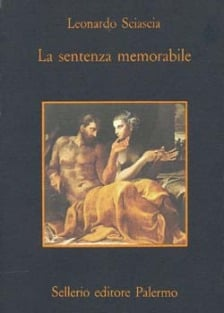
La sentenza memorabile
Copertina: Copertina della edizione autonoma Sellerio, La memoria 56, 1982. Non è la raccolta Adelphi che accorpa Il teatro della memoria e La sentenza memorabile; la precisa impressione rappresentata dall’immagine di catalogo non è identificata nel filmato.
Immagine autentica dell’opera, controllata visivamente; l’edizione di riferimento non è attribuita al filmato.
La sentenza memorabile è nominata nel ritratto del metodo narrativo di Sciascia.
Passaggio 2:01 ↗ · Fonti e libro ↗
Lo strano caso del dottor Jekyll e del signor Hyde
Identificazione probabile
Copertina: BUR / Rizzoli · 2021
Immagine autentica dell’opera, controllata visivamente; l’edizione di riferimento non è attribuita al filmato.
Jekyll e Hyde sono evocati nella digressione sul doppio; titolo completo ricondotto al romanzo di Stevenson.
Passaggio 2:54 ↗ · Fonti e libro ↗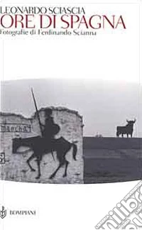
Ore di Spagna
Copertina: Copertina Bompiani 2000, fotografie di Ferdinando Scianna, ISBN 9788845244025. Immagine di catalogo Unilibro con figura di Don Chisciotte a cavallo; edizione di riferimento, non confronto visivo con la copia del relatore.
Immagine autentica dell’opera, controllata visivamente; l’edizione di riferimento non è attribuita al filmato.
Ore di Spagna è il titolo del libro da cui è raccontata la scoperta di due vecchi volumi.
Passaggio 2:56 ↗ · Fonti e libro ↗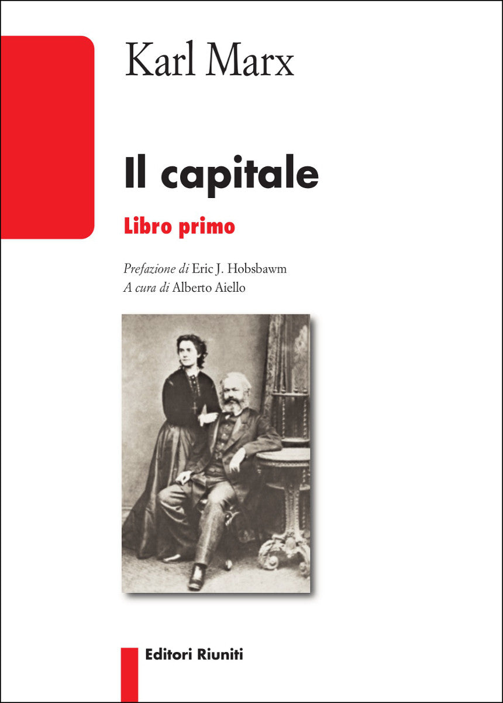
Il capitale
Copertina: Editori Riuniti · Libro primo
Il capitale di Marx è nominato nella descrizione del libro rosso con un timbro socialista di Saragozza.
Passaggio 3:52 ↗ · Fonti e libro ↗
The Anatomy of Melancholy
Copertina: Copertina verticale originale NYRB Classics, 30 aprile 2001, 1424 pagine, introduzione di William H. Gass. Non è una delle edizioni italiane in tre volumi ricordate nel contributo; il 1621 riguarda la prima pubblicazione, non questa veste.
Immagine autentica dell’opera, controllata visivamente; l’edizione di riferimento non è attribuita al filmato.
Burton, Anatomia della malinconia e 1621 espliciti; la edizione in tre volumi non è identificata con la copertina inglese acquisita.
Passaggio 6:14 ↗ · Fonti e libro ↗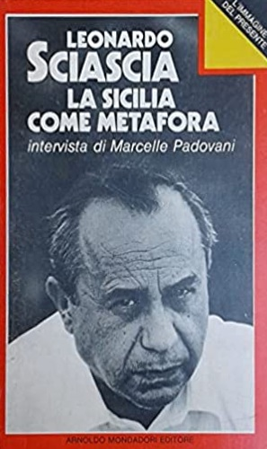
La Sicilia come metafora
Fotografia dell’esemplare · Mondadori 1979: Fotografia della copertina Mondadori 1979, Immagine presente: ritratto fotografico di Sciascia, cornice rossa e nome di Marcelle Padovani. Nessun ISBN moderno ricavato per supposizione dalla prima edizione.
Immagine autentica dell’opera, controllata visivamente; l’edizione di riferimento non è attribuita al filmato.
La Sicilia come metafora e la intervista con Marcelle Padovani sono esplicite.
Passaggio 8:00 ↗ · Fonti e libro ↗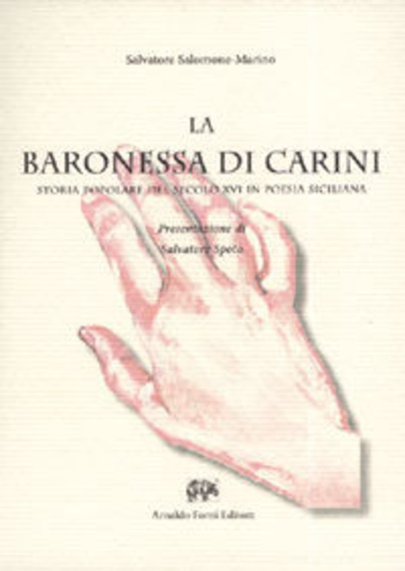
La Baronessa di Carini: storia popolare del secolo XVI in poesia siciliana
Copertina: Copertina Forni 2012, ristampa anastatica della edizione Palermo 1914, presentazione di Salvatore Spoto, ISBN 9788827113868. La mano rossa fa parte della grafica autentica. Non è la locandina dello sceneggiato televisivo né un romanzo di Natoli o Di Quattro. La diversa paginazione totale fra cataloghi non viene armonizzata per congettura.
Immagine autentica dell’opera, controllata visivamente; l’edizione di riferimento non è attribuita al filmato.
Salomone-Marino e La Baronessa di Carini espliciti; riferimento alla raccolta e allo studio del poemetto popolare.
Passaggio 8:54 ↗ · Fonti e libro ↗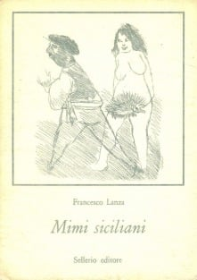
Mimi siciliani
Copertina: Immagine ufficiale Sellerio della copertina illustrata con incisione di Mino Maccari. La pagina editoriale indica 1971, XX-180 pagine e ISBN 9788838900792; non viene attribuita all’immagine una specifica ristampa 1984.
Immagine autentica dell’opera, controllata visivamente; l’edizione di riferimento non è attribuita al filmato.
Mimi siciliani di Francesco Lanza sono nominati nel percorso sulla tradizione della isola.
Passaggio 9:24 ↗ · Fonti e libro ↗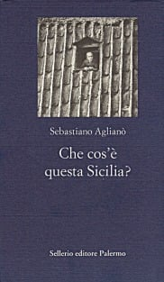
Che cos’è questa Sicilia?
Copertina: Copertina ufficiale Sellerio 1996, nota introduttiva di Marzio Mazzara, 160 pagine, ISBN 9788838912092. Non è la rara edizione Mascali 1945 né quella Corbo e Fiore 1982 ricordata nel filmato.
Immagine autentica dell’opera, controllata visivamente; l’edizione di riferimento non è attribuita al filmato.
Sebastiano Aglianò e Cos’è questa Sicilia sono espliciti; titolo ricondotto alla storia editoriale dell’opera.
Passaggio 14:54 ↗ · Fonti e libro ↗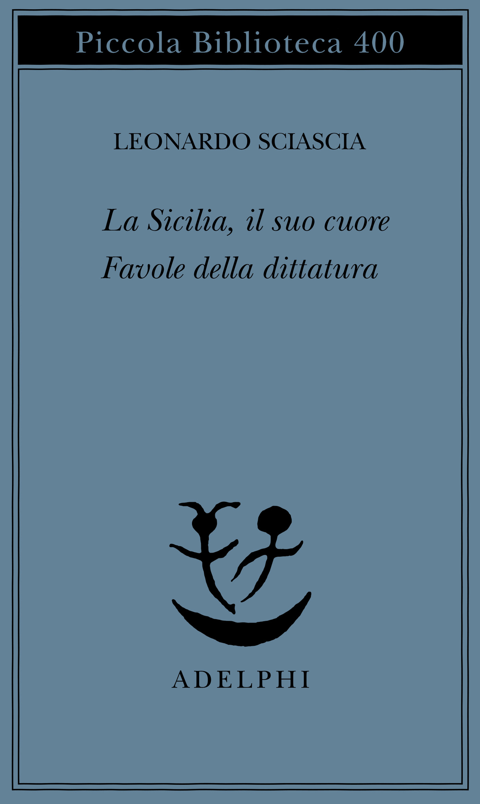
Favole della dittatura
Raccolta Adelphi · contiene Favole della dittatura: Copertina della raccolta La Sicilia, il suo cuore / Favole della dittatura, Adelphi, Piccola Biblioteca 400, 1997, ISBN 9788845913419. Comprende anche una diversa opera poetica non nominata qui come titolo autonomo; non è la copertina Bardi 1950.
Immagine autentica dell’opera, controllata visivamente; l’edizione di riferimento non è attribuita al filmato.
Favole della dittatura e Bardi 1950 sono nominati fra gli esordi di Sciascia.
Passaggio 20:15 ↗ · Fonti e libro ↗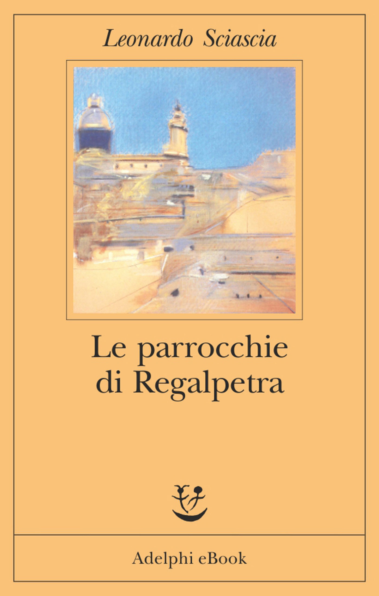
Le parrocchie di Regalpetra
Copertina della edizione digitale · Adelphi: Copertina Adelphi eBook 2016, ISBN 9788845978012. La indicazione eBook è visibile nella grafica; non è la copertina della prima Laterza 1956 o di una specifica ristampa cartacea.
Immagine autentica dell’opera, controllata visivamente; l’edizione di riferimento non è attribuita al filmato.
Le parrocchie di Regalpetra e il rapporto con Vito Laterza sono espliciti.
Passaggio 20:50 ↗ · Fonti e libro ↗
I promessi sposi
Identificazione probabile
Copertina: BUR · 1998 · introduzione di Guido Bezzola
Immagine autentica dell’opera, controllata visivamente; l’edizione di riferimento non è attribuita al filmato.
La discussione del romanzo di Manzoni e della revisione della lingua rimanda probabilmente ai Promessi sposi; titolo non pronunciato in questo punto.
Passaggio 24:19 ↗ · Fonti e libro ↗
Il Gattopardo
Copertina: Feltrinelli · Universale Economica 900 · 2026
Immagine autentica dell’opera, controllata visivamente; l’edizione di riferimento non è attribuita al filmato.
Il Gattopardo è nominato nel confronto con altri romanzi sulla Sicilia.
Passaggio 25:40 ↗ · Fonti e libro ↗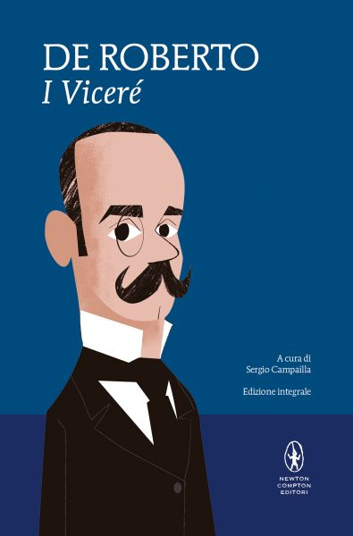
I Viceré
Copertina: Copertina ufficiale Newton Compton, MiniMammut 20, edizione integrale a cura di Sergio Campailla, 512 pagine, ISBN 9788854165564. Veste editoriale moderna di riferimento; nessuna data di impressione dedotta dal copyright generale del sito.
Immagine autentica dell’opera, controllata visivamente; l’edizione di riferimento non è attribuita al filmato.
I Viceré di De Roberto sono espliciti nel medesimo confronto.
Passaggio 25:48 ↗ · Fonti e libro ↗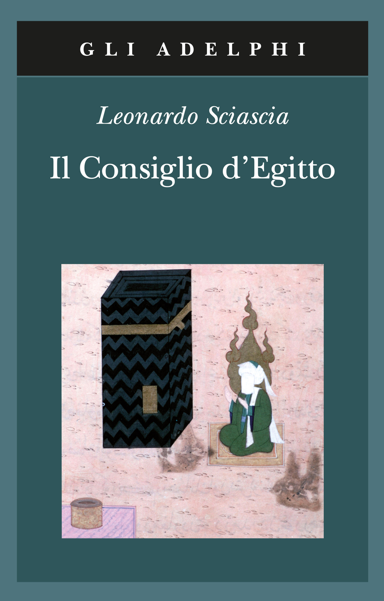
Il Consiglio d’Egitto
Copertina: Copertina Adelphi, gli Adelphi 358, 2009, 168 pagine, ISBN 9788845924477, miniatura della Kaaba. Non è la differente copertina con il ritratto di Giuseppe Vella della edizione Fabula 1989.
Immagine autentica dell’opera, controllata visivamente; l’edizione di riferimento non è attribuita al filmato.
Il Consiglio d’Egitto è nominato come termine della discussione su romanzo storico e potere.
Passaggio 26:01 ↗ · Fonti e libro ↗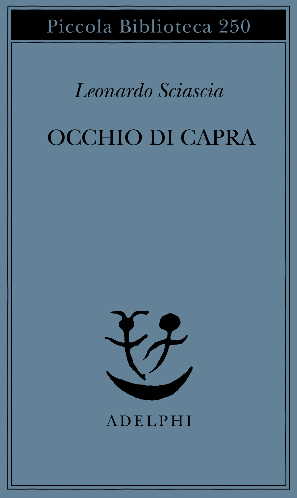
Occhio di capra
Copertina: Copertina ufficiale Adelphi, Piccola Biblioteca 250, edizione iniziata nel 1990, ISBN 9788845907685. Immagine tipografica azzurra; la precisa impressione e la coincidenza con il volume del filmato non sono accertate.
Immagine autentica dell’opera, controllata visivamente; l’edizione di riferimento non è attribuita al filmato.
Occhio di capra è nominato e la locuzione viene spiegata attraverso una immagine meteorologica.
Passaggio 30:02 ↗ · Fonti e libro ↗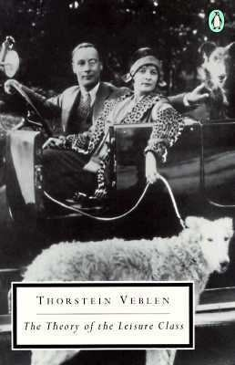
La teoria della classe agiata (The Theory of the Leisure Class)
Identificazione probabile
Copertina di una edizione inglese: Copertina della edizione inglese Penguin Books 1994, ISBN 9780140187953, verificata nel catalogo e nell’immagine. Originale 1899; non copertina della traduzione Einaudi 1949 citata. Per la edizione italiana 2007, Braidense TO01607179 distingue premessa Ferrarotti, introduzione Francesca Lidia Viano e prefazione C. Wright Mills.
Penguin Books 1994, lingua inglese. Non copertina Einaudi 1949; la tiratura usata dal relatore non è identificata.
Veblen e il consumo ostentativo degli animali domestici: collegamento probabile alla Teoria della classe agiata, titolo non pronunciato.
Passaggio 32:34 ↗ · Fonti e libro ↗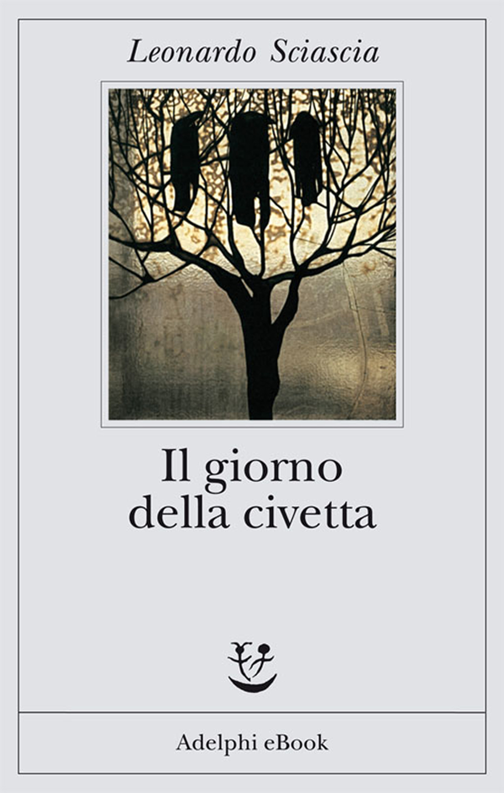
Il giorno della civetta
Copertina della edizione digitale · Adelphi: Copertina Adelphi eBook 2011, ISBN 9788845970009, corvi su un albero dalla vetrata di Cesare Picchiarini su disegno di Duilio Cambellotti. La dicitura eBook è conservata; prima edizione e veste digitale non vengono confuse.
Immagine autentica dell’opera, controllata visivamente; l’edizione di riferimento non è attribuita al filmato.
Il giorno della civetta è esplicito nella descrizione delle classificazioni morali dei personaggi.
Passaggio 33:23 ↗ · Fonti e libro ↗
Metafisica
Identificazione probabile
Copertina: Bompiani · Il pensiero occidentale · 2004 · a cura di Giovanni Reale
Copertina autentica di riferimento, controllata visivamente. L’edizione non è identificata come quella usata nel video.
La parafrasi sulla filosofia libera perché non servile rimanda probabilmente a Metafisica I,2; non è una citazione letterale con titolo esplicito.
Passaggio 36:50 ↗ · Fonti e libro ↗Il Consiglio d’Egitto
Copertina: Copertina Adelphi, gli Adelphi 358, 2009, 168 pagine, ISBN 9788845924477, miniatura della Kaaba. Non è la differente copertina con il ritratto di Giuseppe Vella della edizione Fabula 1989.
Immagine autentica dell’opera, controllata visivamente; l’edizione di riferimento non è attribuita al filmato.
Il romanzo torna per la lettura del dialogo su privilegio e diritti altrui.
Passaggio 38:16 ↗ · Fonti e libro ↗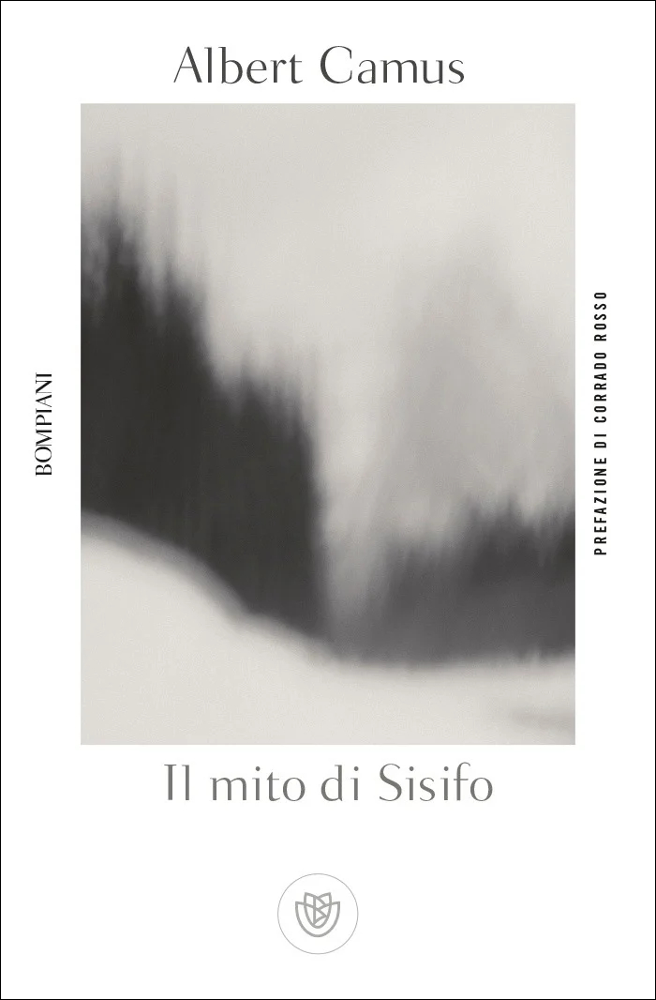
Il mito di Sisifo
Copertina: Bompiani · Tascabili · edizione italiana di riferimento
Copertina autentica di riferimento, controllata visivamente. L’edizione non è identificata come quella usata nel video.
Camus e Il mito di Sisifo sono espliciti nel passaggio sul problema della esistenza.
Passaggio 44:04 ↗ · Fonti e libro ↗
Fedone (Phaedo)
Identificazione probabile
Copertina della raccolta The Last Days of Socrates, contenente il Fedone: Copertina della raccolta The Last Days of Socrates, Penguin Classics,29 aprile 2003,304 pagine, traduzione di Hugh Tredennick e Harold Tarrant, a cura di Tarrant. Comprende Eutifrone, Apologia, Critone e Fedone: non è una edizione autonoma del solo Fedone.
Raccolta dichiarata di quattro dialoghi, non volume autonomo del Fedone. La traduzione Perseus Harold North Fowler è una altra fonte e non viene attribuita alla copertina Penguin.
Socrate e il filosofare come imparare a morire: probabile richiamo al Fedone, titolo non pronunciato.
Passaggio 44:38 ↗ · Fonti e libro ↗
L’affaire Moro
Copertina: Adelphi · Piccola Biblioteca 332, 1994 · con aggiunta la relazione parlamentare
Immagine autentica dell’opera, controllata visivamente; l’edizione di riferimento non è attribuita al filmato.
L’affaire Moro è esplicito nel ragionamento sul sequestro e sulle risposte dello Stato.
Passaggio 45:53 ↗ · Fonti e libro ↗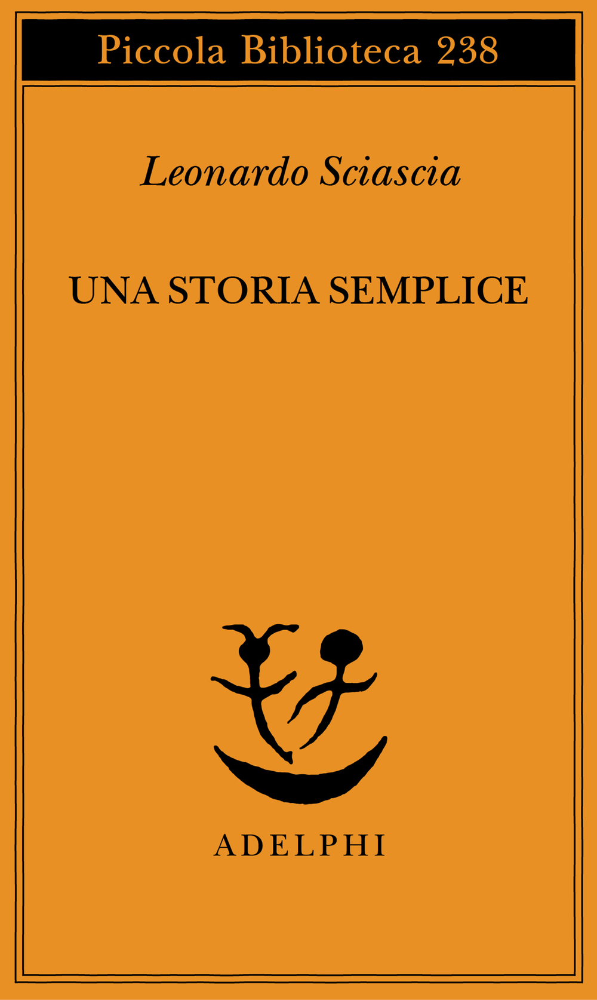
Una storia semplice
Copertina: Adelphi · Piccola Biblioteca 238 · 1989
Immagine autentica dell’opera, controllata visivamente; l’edizione di riferimento non è attribuita al filmato.
Una storia semplice è nominata e ne viene discusso il dialogo fra il professore e il magistrato.
Passaggio 49:15 ↗ · Fonti e libro ↗Una storia semplice
Copertina: Adelphi · Piccola Biblioteca 238 · 1989
Immagine autentica dell’opera, controllata visivamente; l’edizione di riferimento non è attribuita al filmato.
Il racconto torna con la battuta finale sulla morte come ultima speranza: voce letteraria, non consiglio personale.
Passaggio 55:02 ↗ · Fonti e libro ↗